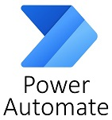
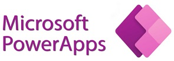
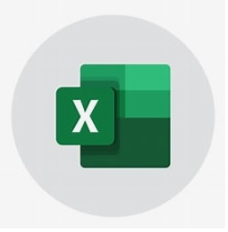

Soy una persona que poco a poco se ha ido especializando en programas concretos de O365, como son Excel en su nivel avanzado, word, power automate y power apps, entre otros.
BuscarCreación de flujos de trabajo mediantes Power Automate
Creación de apps mediante Power Apps para facilitar el trabajo desde cualquier parte, rellenando in situ las apps
Excel nivel avanzado, junto con Power Pivot. Sincronización de ficheros OBDC junto con otras bases de datos para unificar
